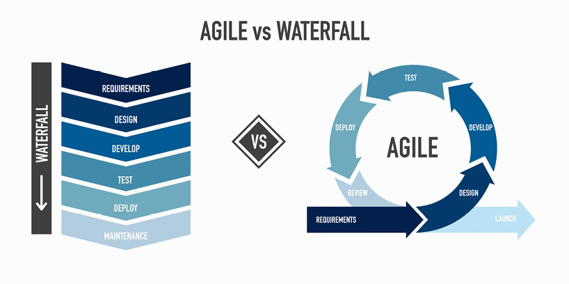
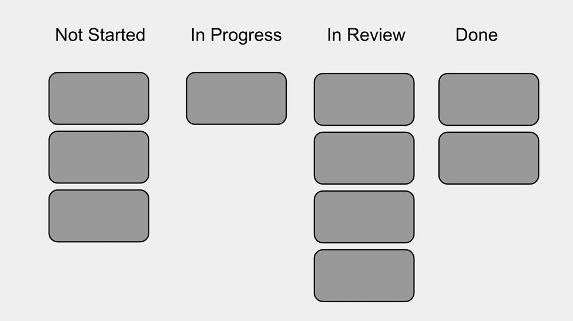

Chapter 10
Many PMs cringe at the thought of project management. After years of explaining to our friends and family that we are product managers, not project managers, we might have built up some negative feelings. Luckily, there are modern approaches to project management that are lightweight and less tedious than traditional project management. But no matter how you approach it, it is critical to get it right.
Without good project management, products get delayed by duplicated work, dependencies, poor time allocation, people running out of work, distractions, and misunderstandings.
The PM's responsibility for project management varies a great deal from team to team. Sometimes the PM takes the lead, while other times, an engineer or dedicated project manager drives project management.
Agile, Lean, Kanban, and Scrum are modern frameworks and philosophies that influence software development at most tech companies. If you've heard of Sprints, Product Backlog, or Daily Standups, you're already familiar with some of the concepts. Most modern teams use a few of these elements. 1
Here is a quick overview of these approaches and the terms you might hear. Be warned that many people use the terms loosely or interchangeably.
Lean is a philosophy used to maximize customer value while minimizing waste. It comes from practices developed at Toyota and was the philosophical underpinning of agile. Today, it's mostly used interchangeably with agile or to reference newer concepts, such as Lean MVP, which focuses on validating the product with customers before investing too heavily in building it out.
Agile is a philosophy and high-level methodology that is flexible and iterative . Agile is in contrast to the older Waterfall methodology, where decisions and deliverables from each stage in the process were locked in and "thrown over the waterfall" to the next stage.
With waterfall, PMs would write up and review long specification documents that detailed how every part of the product would work. Those would go through a heavy review and approval cycle. The document would then go to designers who would design every pixel of the flow, without making any changes to the initial requirements. Those designs would then go to the engineers who would code up the designs and requirements exactly. Finally, months or years later, customers would get the product. There was a lot of upfront work and not much encouragement to change things from earlier stages.

Agile processes include the same stages as Waterfall, but the cycles are smaller and the lines between the stages are blurrier. With agile, a PM doesn't write out every detail of how the product works. Instead, they have a conversation or create a brief document about the requirements. The designer might make lightweight mockups to test with real users. That test might reveal that the requirements need to change. Engineers might start coding before designs are finalized and work side-by-side with designers to try out a few alternatives. The product is broken up into multiple small launches, each of which is shared with customers as early as possible so their feedback can influence future work.
Agile can be thought of as a spectrum. Most teams say they are "agile-ish." A team can become "more agile" by decreasing the size of the cycle (i.e., breaking work into more incremental milestones and launches) and replacing long formal documentation with in-the-moment collaboration.
Scrum is a popular agile framework with specific roles, tools, and processes. Scrum has introduced or formalized the concepts of Backlog, Sprint, Daily Standups, and Retrospectives. Many teams use some or all of these concepts without necessarily calling it Scrum.
In Scrum, teams work in sprints of one to four weeks. At the start of each sprint, the team does sprint planning where they pull work from the product backlog into the sprint backlog and estimate how much work can be done in the next sprint.
During the sprint, team members pick work off the backlog and meet daily for a fifteen minute standup meeting where they share progress and help unblock each other. At the end of each sprint, the team has a sprint review on what was done and a sprint retrospective on how things went and could be improved.
Two key roles in Scrum are the product owner and scrum master . At many companies, the product manager will fill the role of product owner. If they are split, however, the PM is more focused on strategy while the product owner handles the day-to-day tactics. The tech lead will often fill the role of scrum master.
The product owner is responsible for managing the backlog, stakeholder management, and accepting work when it’s complete. The scrum master is responsible for making sure Scrum is done well by setting up and running the meetings, unblocking people, and working with the product owner to make sure everything is ready for the start of a sprint.
Many teams pick and choose a few elements of Scrum or make their own adaptations to the framework. It's rare to find a team that implements Scrum exactly as laid out in The Scrum Guide™. Luckily, that adaptability is exactly what the creators of Scrum wanted! 2
Kanban is another agile framework that's best known for the concept of the Kanban board.
A Kanban board is a visual way to organize work and workflows. The work is written onto cards that start in the first column and are moved as the work progresses. Each column represents a workflow stage such as Not Started, In Progress, In Review, and Done.

With a Kanban board, it's easy to see how much work is in each column so you can make sure things aren't getting stuck in one stage. In strict versions of Kanban, each stage has a limit to how many cards it can have—if you hit the limit, you need to focus on moving cards to the next stage before you can put more work in.
A product backlog is the prioritized list of work for a product development team. It includes planned features, detailed requirements, bug fixes, infrastructural work, and research that needs to be done.
The work can be written as straightforward tasks, or it can be represented in a format called User Stories . The typical template for a user story is: "As a <who>, I want to <what>, so that <why>." For example, "As an administrator, I want to require two-factor authentication, so that I can increase security." This format helps ensure that the PM is handing over problems and requirements with context, rather than just solutions.
User stories can be grouped together into larger bodies of work called epics , which can then be grouped into an organizational layer called initiatives , which can then be grouped into a layer called themes . For example, the story from the previous paragraph could be part of an epic, "Launch improved administrator tools," which is part of the initiative, "Become enterprise-ready," which is part of the theme, "Every Fortune 500 company uses our products."
The tasks or stories usually have cost estimates —for example, in the format of story points . Story points are an abstract unit of cost; 1 point is the easiest possible work, 2 points is work that should take twice as long as a 1-point task, and it increases from there. Engineers (not PMs) set the cost estimates.
Just like the exchange rate between the euro and the dollar can change over time, the exchange rate between points and days can vary. At the end of each sprint, the team adds up the number of points completed to calculate the velocity and then can use that calculation to estimate how many points can be completed in the next sprint. If you know that half of your team will be out on vacation next sprint, you might expect to complete half as many points. If the team completes many fewer points than expected, that's something to discuss in the sprint retrospective.
You should work with the engineers to keep the tasks fairly small. Sometimes, PMs think so much about the big picture that their tasks become too big as well. If a task costs more than eight points (or longer than two weeks), the engineer's estimates can get wildly inaccurate. There's a simple fix: break up the task into smaller tasks.
It is the PM's responsibility to build and maintain the backlog. Backlog grooming (or backlog refinement ) refers to keeping the backlog up-to-date, prioritized, and actionable. For example, the PM needs to make sure that the items at the top of the backlog have the necessary design work done and enough details so the work is ready to pick up.
How design and discovery fit in
Agile is a great, lightweight approach to scheduling work, but there's a missing piece: When do designers do their work? Almost certainly, the design work will come before engineering, but how much before?
This depends on the team, but there are two main approaches—each with their pros and cons:
Designers work one sprint ahead of engineering.
The approach works if designing something takes less time than building it. It encourages tight collaboration between engineers and designers and makes it easy for the team to change direction without wasting a lot of design work. The downside is that this approach timeboxes design work into one sprint, which is not always desirable or feasible.
Engineering doesn't start until the Discovery and Design phases have gotten a large enough head start.
This approach works well when you want more time for discovery and design, but having design work done far ahead of time can make your team less nimble. Designers will make more decisions within their design tools without a deep understanding of the engineering costs, rather than playing with working code and iterating. Additionally, you'll need to figure out what the engineers do while they're waiting.
If you're starting a brand new team, the engineers might stay on their previous team until you're ready for them, or they can do engineering discovery work, such as prototyping new technologies. They might also be able to start on backend work that doesn't depend on the design.
If you already have a team, the PM and designer need to dual-track their work. This means they do discovery for the next project while supporting the engineers building the current project. It's up to the PM to ensure the schedules align so that everyone has important, actionable work. For example, you can have the engineers work on an additional release with lower priority features and polish, or give them time to reduce technical debt.
Have an explicit conversation about your project management responsibilities
It's very common for PMs, engineers, and designers to have different expectations about the PM's role in the software development process or to have confusion around the process. You might have expected the engineering lead to run most of the project management, but they expected you to do it. When you join a new team, establish the expectations before work starts. Even at the same company, each team might distribute the work differently.
Once you've been on a team for a few weeks, check in with your teammates and ask them how the project management has been going, from their perspective. You don't want to be surprised through your manager or during your peer reviews that you're not living up to their expectations.
Groom and prioritize the backlog
Make sure your team always has high priority work in the backlog so they don't run out of things to do.
One area that sometimes causes confusion is when the engineers aren't clear what work is ready to pick up. For example, they might think that there are still open questions on one of the tasks. Or, perhaps the engineers were waiting for the designer to discuss the design; but meanwhile, the designer was waiting for the developer to pick up the work so that they can discuss it further. The easy fix for this is to come up with a clear standard to mark the state—such as "ready for engineering"—for each task.
Create milestones and checkpoints
Big projects need to be broken down into milestones and checkpoints. This allows you to assess how well the work is going and adjust it if needed. Beyond that, milestones are great for morale and creating a sense of accomplishment.
In general, it's very hard to estimate what percent of a big piece of work is done. The pareto principle states that the last 20% of the code takes 80% of the time. That's why milestones are so important—until the team hits a well-defined milestone, you won't have much of an idea how much work is left.
While milestones can be set however you like, they should ideally represent clear increments of internal, customer, or business value. For example, you can set a milestone for when the work is internally dogfoodable, or when the first external customer is using the code.
Once you have milestones, use them to motivate the team. Remind people of upcoming milestones and celebrate when they've been achieved.
Status reports are important because they're a major way that people outside of your immediate team learn about what your team is doing. When done well, they help you get both support and recognition.
A good status update keeps the audience in mind. What do they need to know? What will they be interested in? How do you make it informative, understandable, and fun to read?
Generally a status report will cover:
Ideally, status reports shouldn't take much time to write. See if you can align your status report with your other team processes so it doesn't create much additional work. A weekly cadence is typical. When sending your status report, don't be afraid to send it broadly to anyone who might be interested in the project, especially product leaders and cross-functional partners.
Check in with your team members
While sometimes there's just more work than expected, it's not the only reason people fall behind—or even necessarily the most common. They might fall behind because:
In any case, as a PM, you're responsible for ensuring your team stays on track. One of the best tools for this is checking in with each team member regularly. When someone falls behind, figure out why—don't just make assumptions. Most of the issues can be addressed with a conversation or some extra clarifications.
Like Buckle did, it's important to approach these issues in a way that shows respect and consideration for your teammates. You can suggest another person with whom they can brainstorm if they get stuck, remind them of the importance of finishing work and sharing it, help prioritize their overall list of responsibilities, or assist in rescoping work.
Checking in early and often can be useful, but there isn't a one-size-fits-all strategy. Some people really appreciate a daily check-in and want your help staying on track, while others prefer not to be micromanaged. Ask people what works best for them.
Recall the famous interview question: What do you do when your team falls behind schedule?
At a high level—both in interviews and in real life—you have three levers to pull:
There is, of course, no right or wrong answer. All of these are promising options given the right circumstances, and all can be terrible in the wrong circumstances.
Junior PMs often overlook the option of adding people because it requires making a case to product leadership. Don't ignore this option if your work is high priority for the company and you catch the problem early enough. Adding people can work if there is independent, parallelizable work that doesn't require a long ramp-up time. If it's the week before the launch, adding more people would probably delay you further.
Moving the launch date can have big implications. The financial plans of the company might have relied on a particular launch date. As the launch date moves, the cost of the project increases, which makes it harder for the project to have a good return on investment. And, of course, if you delay the launch, users have to wait longer for all the great things you built.
Cutting scope is usually the preferred approach. The product backlog should already have been sorted by priority order, so hopefully you can just drop the items lower on the list and have the most important work prioritized. Most projects have some scope that can be cut; however, you don't want to cut scope in a way that could affect the success of the project.
Share your best practices across the organization ⚡⚡
Once you reach the advanced levels of product management, you're expected to have influence across the organization, even if you're not a people manager. You've had a lot of experience running teams, and you're now well-positioned to recognize opportunities by observing how other teams are set up.
There are a lot of different ways to share your best practices, and the measure of success is that people actually learn from you and adopt your advice. It doesn't matter how many learning talks you give or how many guides you write if people aren't finding them valuable.
The best way to share your best practices, especially as an IC, is usually to share what worked for you—but to do so in a collaborative way rather than a lecturing tone. Even if you have more seniority than the other PMs, they might get defensive and be less receptive to your advice if they sense a power dynamic.
For example, you might share the templates you use, or a list of advice you've written up for yourself. You can organize "best practice sharing" sessions where everyone gets a chance to share their advice. You can also offer to mentor people and let them come to you with questions.
If your engineer is blocked and needs to ask you a question, work stops until they get your answer. If you're frequently busy and take a while to respond, your engineers will get frustrated. On the flip side, if you're usually available, you'll have more opportunities to assist your team.
Ideally, the PM, designer, and engineers should all be near each other so they can call each other over whenever they want. You'll notice you get a lot more questions when you sit next to someone as opposed to when they send an email or walk over to you.
If you don't sit with your team, it can be helpful to occasionally walk by people's desks and ask how it's going (while being careful not to interrupt people's flow). If you work remotely, you can send a friendly chat during a time you think they're available. Sometimes, they'll have something on their minds, or you'll find out that they're stuck on something they didn't realize you could help with.
Beyond that, try to respond promptly to anyone, especially people on your feature team. Adopt "inbox zero," or another system, so you don't leave people waiting days for a response.
A dependency is when one piece of work can't start until another finishes. Most project plans have numerous dependencies, for example building the backend before the frontend.
It can sometimes be strategic to take on a dependency. For instance, when Apple releases a new version of iOS with new API capabilities, they also want to have several products available on launch day that use those capabilities.
Keep in mind though that each dependency adds another way your project can be delayed. When the dependency is on another team, it adds a risk that is out of your control and extra communication overhead.
In many projects, a little bit of extra work can enable you to reduce or remove a dependency. For example, if building the frontend has a dependency on building the backend, you may be able to build a fake backend quickly. This enables the frontend team to start their work, while another team builds the real backend. Or, if your feature overlaps with work from another team, you can build your feature to work both with and without the other team's changes; this is a bit more work, but enables one team to launch before the other.
Optimize around your team's resources ⚡
Usually teams should work on the highest priority projects, but sometimes you can get better results by optimizing around people's availability.
Try to figure out which people are on the critical path, and plan around them.
Here are some examples:
Keep a few ideas for these types of projects in the product backlog so they'll be available when you need them.
Improve your team's processes ⚡
Team processes make a huge impact on how well the team executes.
Apply your product skills to assess how your processes are performing. Do people feel like they're moving as fast as they can? Are they happy with the quality of work they're producing? What are their biggest frustrations? What would it take to ship products 50% faster?
Once you know where the opportunities are, you can pick the processes you want to add or change. Sprint retrospectives and daily standups are a great place to start. Partner closely with the engineering and design leads to roll out the changes.
Here are a few more processes to consider.
Set up project management software
If your entire company consists of three people in a room together, you can probably get by with sticky notes on a whiteboard—it keeps the overhead low and makes for interesting room decor.
Once your company starts to grow, you'll need to start using a project management tool to keep track of who is doing what, and what their deadlines are. I'm obviously biased from working on the product for eight years, but I love Asana as a project management tool.
Project management software is important for several reasons:
Use demos as a forcing function
One of the tricks of great project management is to nudge people in effective ways. No one wants to feel micromanaged, but most people love showing off their best work.
Demos are a great example of a forcing function. To give a demo, your team needs to have working code (or a fairly complete design for a designer). If everyone knows that Friday is demos, they'll feel motivated to get their work into a demonstrable state by then. There's often a flurry of activity on Thursday night as people finish up the work that's been dragging on all week.
You can enhance the forcing function of demos by adding on extra guidelines. For example, you can set it up so that all demos are run on a shared beta server, so people need their code checked into beta (not just running on their local machine) if they want to demo.
Use special days to invest in areas that get overlooked
High-performing teams are often laser focused on delivering their product. This is usually a good thing, but it can mean that some important maintenance areas get overlooked:
Setting aside special days to work on one of these areas is a great way to make progress. Schedule a Bug Bash, Polish Week, or Grease Week for your team—or your whole department. 3
One way to get the most out of these special days is to turn them into a fun competition. Keep a leaderboard of how many bugs each person fixes and have a variety of small prizes: most bugs fixed, oldest bug fixed, bug with the highest number of customer reports fixed, etc. You can also consider bringing in snacks, playing music, or having fun activities to get people excited.
Sniff out risks and mitigate them ⚡
As you gain general and domain experience, pay attention to what kinds of things cause problems. Is there an older part of the codebase that's prone to bugs? Do animations tend to have performance issues in different browsers? If you're new in an area, you can find a mentor who has more expertise and ask them what kinds of risks they look for. Ideally, the mentor can tell you a story about what went wrong, since those stories will help you remember and recall the risk when it comes up again.
For each risk, come up with a mitigation:
Detecting risks early improves the quality of your product and the accuracy of your project timeline.
Drive quality and velocity improvements across product teams ⚡⚡
Are your product teams moving fast enough and delivering a big enough impact? Product leaders can do a lot to speed up team velocity and improve the product quality.
First, gather information. Look at team retrospectives, compare cost estimates to how long things actually took, compare launch targets to the actual results, and survey people about their feedback.
Here are a few problems you might discover.
The investments you make here will have a multiplier effect on your teams.
Consider partnerships and acquisitions ⚡⚡
Early and mid-career PMs usually ignore partnerships and acquisitions as potential solutions for solving problems. Instead, they jump straight to internally building a new solution. By expanding your perspective, you can sometimes find a much better solution.
Ely Lerner, who's been responsible for integrating two acquired companies at Yelp, suggests partnering with your corporate development team and keeping them up to speed on the kinds of problem spaces you're thinking about. Meeting with potential partners can be valuable even if the partnership doesn't pan out, since they can give you new perspectives on the industry.
Acquisitions are notoriously high risk, high reward. Most acquisitions fail, but some of the most successful brands have flourished after acquisition: PayPal, YouTube, and Instagram, to name a few.
To successfully integrate an acquired company, Lerner shares two pieces of advice:
First, see if you can implement something as a partnership before fully integrating the companies. Second, there's a lot of value in getting a bunch of fairly senior engineers who can serve as cultural ambassadors from your existing company, and dropping them into the acquired team on day zero. Since they're embedded, they can help with a gradual culture shift and avoid an us-versus-them thing.
1 . In most of the book, we've put "Concepts and Frameworks" as the third section, after "Responsibilities" and "Growth Practices." But for this part, we felt it was important to describe the frameworks first, as you need this terminology to understand the Responsibilities and Growth Practices. It's a loss for consistency, but a win for comprehension.
2 . Read more at https://www.scrumguides.org/ .
3 . Polish Week is a week when teams focus on small customer-facing improvements and Grease Week is when teams focus on "greasing the wheels" with improvements to internal tools. You can learn more about these at https://blog.asana.com/2012/10/polish-week/ and https://blog.asana.com/2013/07/grease-week-at-asana/